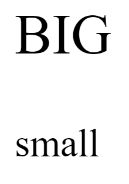

Nesta frase temos um termo em negrito usando a tag B (não semântica)
Nesta frase, tenho um termo em destaque usando a tag STRONG (semântica)

Nesta frase, temos um termo em itálico usando a tag I (Não semântica)
Nesta frase, temos um termo em ênfase usando a tag EM (semântica)
Podemos criar também um texto marcado usando a tag MARK

Estamos criando um texto grande usando a tag BIG e um texto pequeno usando a tag SMALL nesse parágrafo.
Podemos marcar um texto como excluído usando a tag DEL para indicar que ele deve ser lido, mas não considerado.
Podemos marcar um texto como insrerido usando a tag INS para dar uma ênfase e indicar que ele foi adicionado depois.
Existe também o sublinhado com a tag U (não semântica)
Para inserir coisas do tipo X8 +3 com a tag SUP
Para inserir coisas do tipo H2O com a tag SUB